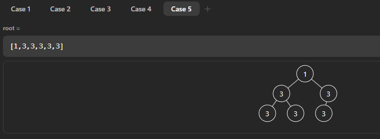

二叉树及其三种序的遍历
二叉树的简单定义：任意节点只有左右两个节点的树
对于二叉树的三种序的遍历，就是在遍历时根节点所处的遍历位置，具体见下面的递归解析
- 先序遍历：中->左->右
- 中序遍历：左->中->右
- 后序遍历：左->右->中
fn traverse(root: Option<Node>) {
if root.is_none() {
return;
} else {
// 1
traverse(root.unwrap().left);
// 2
traverse(root.unwrap().right);
// 3
}
}二叉树遍历的递归序，可以派生出三种遍历顺序，递归序就是每一个非空节点，在这个函数中都会有代码中1/2/3个位置执行当前节点的操作，不同的遍历序就是在不同的位置去打印了节点
二叉树的非递归遍历
先序遍历
用栈实现二叉树的先序遍历
- 先将头节点压入栈中
- 重复以下过程直到栈为空：弹出栈顶元素，然后将该节点的右子树压入栈中，再将该节点的左子树压入栈中，这是因为要先弹出左子树，再弹出右子树
中序遍历
用栈实现二叉树中序遍历
- 先将头节点压入栈中
- 将它的左边界（它自己的左子树节点和后续所有的左子树节点）压入栈中
- 重复以下过程直到栈为空：弹出栈顶元素之后，将它的右子树及其左边界压入栈中。弹出过程就是左中右的中序遍历
后序遍历
用栈实现二叉树后序遍历（两个栈）
由于后序遍历的顺序是左右中，所以利用先序遍历（这里需要使用一个栈）的方法改为中右左的遍历顺序，然后再使用另一个栈保存之前的遍历结果，最后再依次弹出这个栈的元素就是正确结果
用栈实现二叉树后序遍历（一个栈）
- 记录当前弹出的节点（处理过的节点），也就是下一个要弹出的节点的上一个弹出节点
- 第一次压入头节点
- 如果左右子树未处理，那么压入左子树
- 查看左子树，如果它的左右子树为空，那么弹出此节点并且更新记录为弹出节点
- 继续查看栈顶节点，因为左子树处理过，所以压入右子树处理
- 如果左右子树未处理，那么压入左子树
时间复杂度
- 递归做法：由于每个节点在递归过程中会被访问三次，所以是
O(N) - 非递归做法：每个节点入栈次数可能是多次（引用），但是次数有限，所以时间复杂度也是
O(N)
空间复杂度
都是O(H)，H是树的高度，因为无论是递归还是非递归（栈），它们的最大占用空间都是树的最高高度，对于递归来说，一条边界递归完成后的函数占用空间可以被回收利用，对于非递归，栈的空间也是可以在弹出之后循环利用
Rust实现一个栈的后序遍历二叉树

在上图中的情况，如果使用Rc::eq()，它比较的是指针指向的具体值是否相等，会使得值相同的左右叶子节点被认为是同一个节点，所以在比较上一个弹出的节点和当前节点的左右子节点时应该使用Rc::ptr_eq()方法